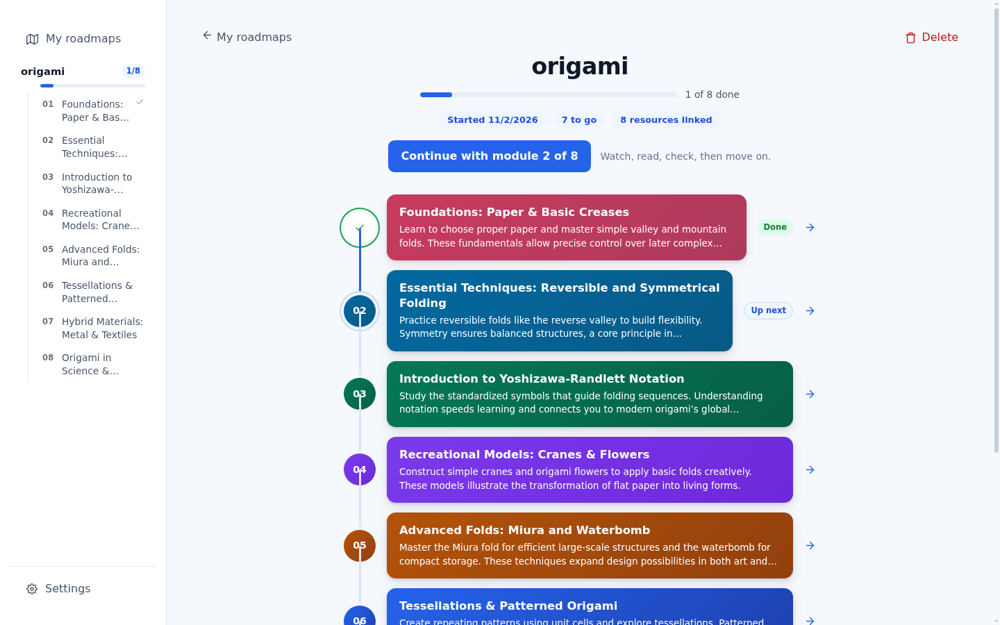
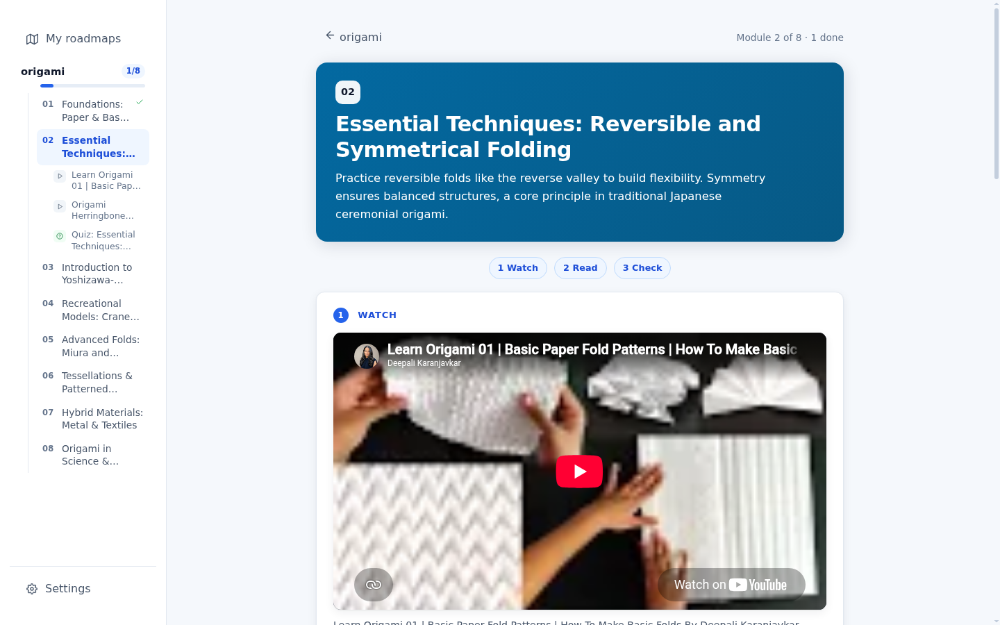
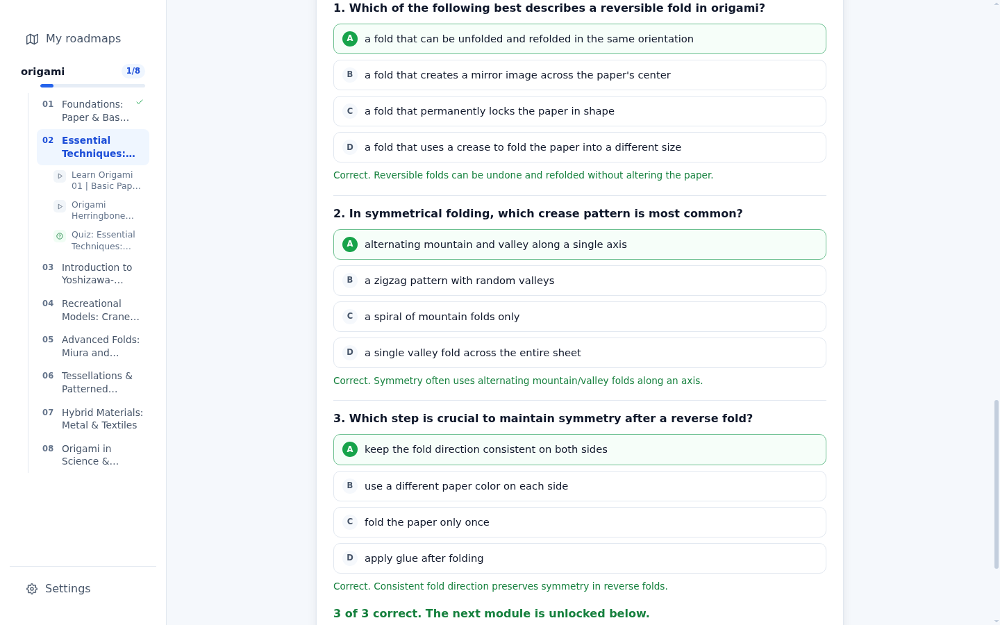
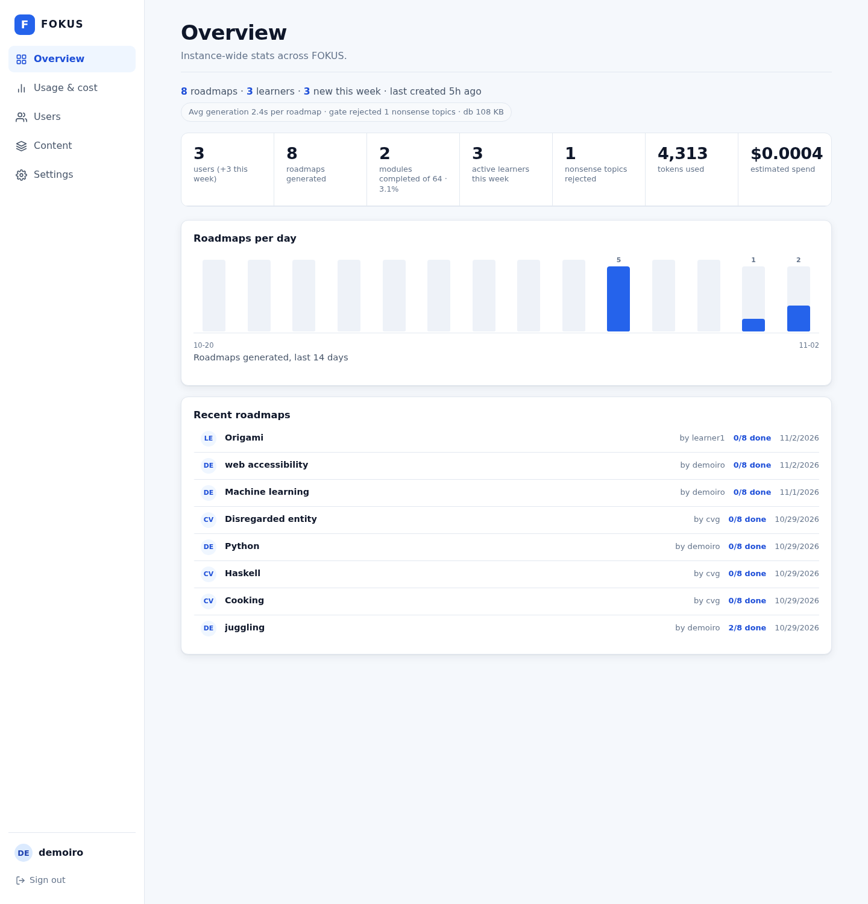

From a learner, for learners
Type any topic, get a learning path sized to it, then work through it one stage at a time. Higher completion, through roadmap-based learning.
The problem
85–90% of self-initiating learners fail to complete their online learning goals or courses (Mukherjee & Kandiah, 2023). The failure is structural, not a lack of effort.
Nobody is waiting for you. There is no next step scheduled, so the week you get busy is the week it ends.
Beginners meet the hardest material first, because search ranks popularity, not order. Then they assume they cannot do it.
How can we lower this fail rate? Give the learner an order they can follow, and a way to know it landed.
What happens without a path
The first step is a search box with no order to it.
Articles, videos, a paid course, three Reddit threads.
Length feels like rigour, so the hardest thing comes first.
No schedule, no check, no next step. The tab closes.
Three learners
Third-year student, wants a summer internship
Has three weeks before applications open and needs enough Python to answer technical questions. Knows the syntax, has never built anything.
Fails today: opens five tutorials, starts all of them, finishes none.
Working junior, learning on weekends
Wants to understand his company's data pipeline rather than nod along in meetings. Forty minutes at a time, on a laptop, late.
Fails today: the weekend he gets busy, the thread is lost and never picked back up.
First-year, learning for the love of it
Wants to draw hands properly for an art club. No deadline, no exam, no one checking, which is exactly why she stops.
Fails today: no accountability at all, so practice is the first thing dropped.
Composite personas built from the two segments on the next slide, not real customers. Their jobs and failure modes are drawn from the self-paced completion research cited earlier; they stand in for the beta cohort rather than describing it.
Who is affected?
Two segments, same job: they have already decided to learn something and have no structure for it.
Studies outside coursework, on a laptop and a phone, around deadlines.
Issue: lack of accountability, study burnout.
Learning a skill for work or a hobby, in short sessions after hours.
Issue: distraction from existing work and responsibilities.
Segment split follows the types-of-learners findings summarised from Pepperdine University, DigitalDefynd and the World Economic Forum. We are not quoting a market size we cannot defend; the beta measures our own conversion.
The trend from now
AI use among students is not a future trend, it is the default. Reports from KPMG, FrontiersIn and the Journal of Nusantara Studies (JONUS) point the same direction, and the newest numbers are large.
The habit is already formed, and it is formed around getting the answer, not learning the material. Anyone building learning tools now competes with a chatbot that answers instantly.
Students do not need to be convinced to use AI for study. They need it pointed at completion instead of answers. That is a positioning problem we can win.
Sources: KPMG, Trust, attitudes and use of artificial intelligence (global student survey, fieldwork Nov 2024 – Jan 2025). Sunway University / ACM, Beyond the Textbook: ChatGPT patterns of use among students in higher education, 2023, n=119. Nasidi et al., Factors influencing AI adoption among Malaysian students, Journal of Nusantara Studies 10(2), 475–493, 2025, n=224.
Scenario: “easy way out”
Paste the assignment, take the answer, submit it. Thirty seconds, no friction, nothing retained.
The work is completed. The learner is not.
The path is ordered, the module ends in three questions, and the next module waits until you pass.
Same AI, pointed at retrieval instead of output.
A chatbot gives you the thing you asked for and ends there.
Every module has a check, so you cannot skip past what you did not absorb.
Progress, next module and completion live in the account, not in a chat log.
Three scenarios
Amira · internship
Types "Python for data analysis". Gets 10 stages. Opens stage one on a Tuesday night, watches an 11-minute video, reads the guide, tries the worked example on her own CSV, passes 4 of 5 questions.
Twenty-eight days later she has finished, and the last stage is the interview question she was actually scared of.
Danish · weekends
Types "how data pipelines work". Works through two stages on a Saturday, then disappears for eleven days. Comes back to the dashboard, sees "Continue: stage 3 of 9", and picks the thread up in one tap.
The gap does not reset him, which is the whole point of a saved path.
Jelena · no deadline
Types "drawing hands". Seven stages, all practice-based. Saves the roadmap offline and works through stage two on a train with no signal, because the guide is already on her phone.
No deadline, so the only thing keeping her honest is the check at the end of each stage.
Illustrative walkthroughs against the shipped app: stage counts, the continue card, offline reading and the check are all real features. They are not testimonies or measured outcomes.
The solution
A path of stages in order, each stage worked through step by step, progress kept. The path is the interface: you always know where you are and what is next.
One input, one path, one next step. No dashboards to configure, no playlists to curate, no options before the first module opens. It works on a phone in one hand.
Each stage ends with a check written from that stage's own guide: recall, applying the idea, and the mistake beginners make. Two thirds right and the next stage unlocks, so completion means comprehension rather than exposure.
The product

A finite set of stages in a fixed order, with the one you are on marked.
The check decides when the next stage opens.
Progress per account, and any roadmap can be saved to the device for offline reading.
Inside a module


Real videos for this stage.
A guide with sources.
Targeted questions, instant.
The product in code
Recommendations are real: videos are scraped from YouTube search and verified, courses are platform search links. No fabricated titles, ids or badges.
Learner
A gate blocks key-spam and non-learnable input before any model call.
System
Pulls live Wikipedia sources for the topic, and per module when it opens.
Model
Between 5 and 12, chosen from the topic's real scope. Ordered beginner to advanced.
System
Real YouTube results, verified; course search links per platform.
Model
3 to 5 targeted questions per stage, from that stage's guide. Stored once.
Business model
Free
RM0
for trying it properly
Plus
RM12 / month
for the student with three topics on the go
Cohort
RM6 / seat / month
10 seats minimum, for a class or study group
A new roadmap costs about RM0.003 of inference. A roadmap taken all the way through, eight guides and eight quizzes, costs about RM0.03.
Groq gpt-oss-20b at $0.075 / $0.30 per million tokens, converted at 4.07 MYR/USD, measured against the app's own token limits.
A heavy Plus user finishing 20 roadmaps a month costs about RM0.62 to serve, against RM12 of revenue.
A free user on one active roadmap costs at most RM0.03 and is capped by design. Paid tiers also remove the free-tier daily token ceiling that limits the instance today.
Business timeline
Each phase starts only when the one before it clears its gate, so a slow beta delays the next phase rather than stacking failures on top of each other.
Closed beta
Ten self-study students, a real domain, a paid model key so capacity stops capping the test. Free for everyone in it.
Gate: 6 of 10 finish a stage unaided
Public launch, keep it free
One campus, one public link, a landing page and the Android build. Free while there is no cost worth charging for; measure return rate instead.
Gate: 25% of accounts come back in week two
Plus tier opens
RM12/month for unlimited roadmaps and offline copies. Free stays genuinely usable: one active roadmap, no time limit, no fake scarcity.
Gate: 3% of monthly actives convert
Cohort tier, one paid pilot
A lecturer or study group pays RM6 a seat. One pilot class, not a sales push, to learn what reporting a teacher actually wants.
Gate: the pilot renews for a second term
Where this goes
Each stage reuses the same topic-in, path-out core. We move when the stage before it works for its users.
One person, one topic, one account, offline copies.
Shipping
Shared roadmaps, a join code, who is on which module.
After beta feedback
Instructor-authored paths, deadlines, per-module reporting.
Needs instructor accounts
Faculty deployment, SSO, content review before a path reaches students.
Needs the stage above proven
What is built today
Installable as a phone app, an Android build on the repo, and a public landing page that shows a real roadmap building itself.

What we know is missing
A pitch that hides its constraints gets caught in the first question. Each of these has a next step.
On the free model tier the instance caps out around six fully explored roadmaps a day. A paid key removes that ceiling and is the first spend the beta needs.
No cohort data yet. Fifteen completions is a signal that the loop works, not proof that people come back for module nine on a new topic.
No sharing, no groups, no instructor tools. Every roadmap is personal-only today, which is what the Cohort tier has to change.
Hosted on a personal tunnel. A real domain and a managed host are required before any public beta link goes out.
The ask
Ten self-study students make a roadmap on a topic they already know, then open module one and take its check.
Everything the beta breaks gets fixed before the next wave. No recruiting everyone at once.
With the loop steady, add shared roadmaps for cohorts, and only then classroom features.
The ask is five minutes per tester: one topic they already know, module one, and a sentence on where it confused them.